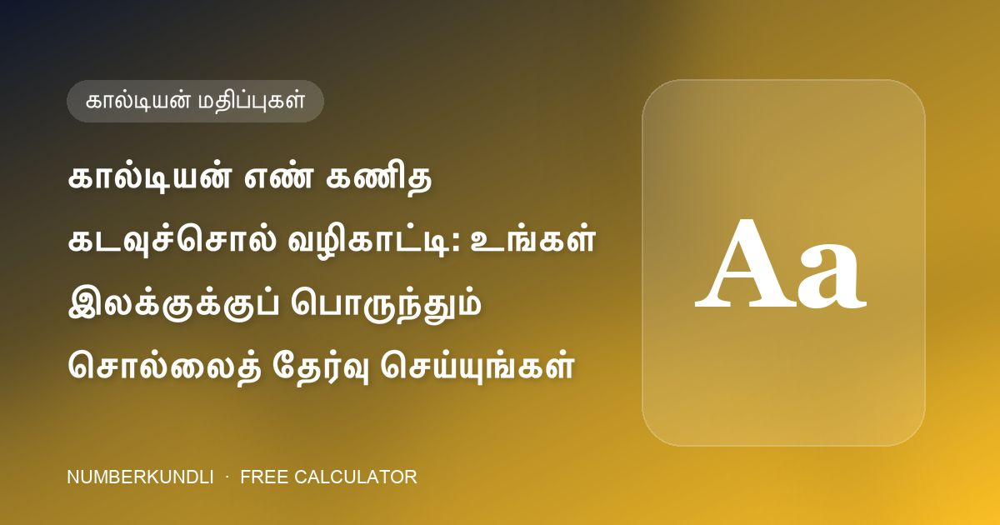

கால்டியன் எண் கணித கடவுச்சொல் வழிகாட்டி: உங்கள் இலக்குக்குப் பொருந்தும் சொல்லைத் தேர்வு செய்யுங்கள்

மொபைல் கடவுச்சொற்கள் 4–16 எழுத்துகள் நீளமாக இருக்கலாம், எண் கணிதத்தில் அந்த எழுத்துகள் எண்களைச் சுமக்கின்றன. கால்டியன் முறை ஒவ்வொரு எழுத்துக்கும் 1 முதல் 8 வரை மதிப்பு ஒதுக்குகிறது (9 இல்லை, அது புனிதமானதாகக் கருதப்படுகிறது). மதிப்புகளைக் கூட்டி, ஒரு இலக்கமாகக் குறைத்தால், கடவுச்சொல்லின் "கூட்டுத்தொகை" கிடைக்கும். உங்கள் வாழ்க்கை நோக்கத்திற்குப் பொருந்தும் கூட்டுத்தொகை கொண்ட சொல்லைத் தேர்வு செய்ய வகுப்பு கற்பிக்கிறது.
கால்டியன் எழுத்துக்கள்
| மதிப்பு | எழுத்துகள் |
|---|---|
| 1 | A, I, J, Q, Y |
| 2 | B, K, R |
| 3 | C, G, L, S |
| 4 | D, M, T |
| 5 | E, H, N, X |
| 6 | U, V, W |
| 7 | O, Z |
| 8 | F, P |
கடவுச்சொல்லுக்குள் உள்ள இலக்கங்கள் அவற்றின் சொந்த மதிப்பாகக் கணக்கிடப்படும். எடுத்துக்காட்டு: GANESHJI = 3 + 1 + 5 + 5 + 3 + 5 + 1 + 1 = 24 → 2 + 4 = 6.
எந்த நோக்கத்திற்கு எந்தக் கூட்டுத்தொகை
| கூட்டுத்தொகை | நோக்கம் | எடுத்துக்காட்டுச் சொற்கள் (வகுப்பிலிருந்து) |
|---|---|---|
| 1 | பெயர் & புகழ், தலைமை | GURUJI, TILK, RAIIN |
| 2 | உள்ளுணர்வு, உணர்ச்சிகள் | SAIBABA, MANGO, PAPAYA |
| 3 | கல்வி, ஆராய்ச்சி | RHYTHM, REDROSE |
| 4 | நீதிமன்ற வழக்குகள் | GRAPES, MOUSUMI |
| 5 | தொடர்பு & பணப் புழக்கம் | LAXMI, LOTUS, NEELAM |
| 6 | திருமணம், குழந்தைகள், வெளிநாட்டுப் பயணம் | GANESHJI, BANANA |
| 7 | ஆராய்ச்சி, மறைஞானம் | APPLE, LIGHT |
| 8 | சொத்து, நீதிமன்ற வழக்கு | PINEAPPLE, ROSE, DATES |
| 9 | ஆற்றல், உணவக வணிகம், விளையாட்டு | HANUMAN, VISHNU |
"8 ஐத் தவிர்" விதி
உங்கள் பிறப்பு அல்லது விதி எண் 8 என்றால், சொத்து விஷயங்களுக்குக் கூட கூட்டுத்தொகை 8 உள்ள கடவுச்சொல்லுக்கு எதிராக வகுப்பு அறிவுறுத்துகிறது — சனியின் மேல் சனி மிகவும் கனமானது. அதற்குப் பதிலாக 5 (பணப் புழக்கம்) அல்லது 6 (இணக்கம்) சொல்லைத் தேர்வு செய்யுங்கள்.
அதை உண்மையான கடவுச்சொல்லாக்குதல்
ஒரு அகராதிச் சொல் பலவீனமான கடவுச்சொல், எனவே எண் கணிதத்தை அடிப்படைப் பாதுகாப்புடன் இணைக்கவும்: இலக்கங்கள் அல்லது குறியீடுகளைச் சேர்க்கவும் (அவை கூட்டுத்தொகையை மாற்றும், எனவே மீண்டும் சரிபார்க்கவும்), ஒவ்வொரு கணக்கிற்கும் வெவ்வேறு கடவுச்சொல்லைப் பயன்படுத்தவும், இரு-காரணி அங்கீகாரத்தை இயக்கவும். எங்கள் கால்டியன் கால்குலேட்டர் நீங்கள் தட்டச்சு செய்யும்போது ஒவ்வொரு எழுத்தின் மதிப்பையும் காட்டுகிறது, எனவே கூட்டுத்தொகை நீங்கள் விரும்பும் இடத்தில் வரும் வரை சொல்லைச் சரிசெய்யலாம். இது முழுவதுமாக உங்கள் உலாவியில் இயங்குகிறது, எதுவும் எங்கும் அனுப்பப்படுவதில்லை.
30 வினாடிகளில் உங்கள் எண்ணைச் சரிபார்க்கவும்
எங்கள் இலவச கால்குலேட்டர் உங்கள் மொபைல் எண்ணின் 10 இடங்களையும் ஆய்வு செய்து, உங்கள் பிறப்பு & விதி எண்களைக் கண்டறிந்து, அதிர்ஷ்ட பின், கடவுச்சொல், வால்பேப்பர் மற்றும் கவரைப் பரிந்துரைக்கிறது — நீங்கள் உள்ளிடுவது எதுவும் உங்கள் உலாவியை விட்டு வெளியேறாது.
அடிக்கடி கேட்கப்படும் கேள்விகள்
கால்டியன் அட்டவணையில் ஏன் 9 இல்லை?
கால்டியன் மரபில் 9 புனிதமானதாகக் கருதப்பட்டு எந்த எழுத்துக்கும் ஒதுக்கப்படுவதில்லை. HANUMAN போல கூட்டல் மூலம் கடவுச்சொல் இன்னும் 9 ஆகக் கூடலாம்.
பெரிய மற்றும் சிறிய எழுத்துகளுக்கு வெவ்வேறு மதிப்புகளா?
இல்லை. மதிப்பு எழுத்தை மட்டுமே பொறுத்தது, அதன் வடிவத்தை அல்ல.
குறியீடுகள் கணக்கில் வருமா?
குறியீடுகளுக்கு கால்டியன் மதிப்பு இல்லை, கூட்டுத்தொகையில் புறக்கணிக்கப்படும்; இலக்கங்கள் அவற்றின் முக மதிப்பாகக் கணக்கிடப்படும்.